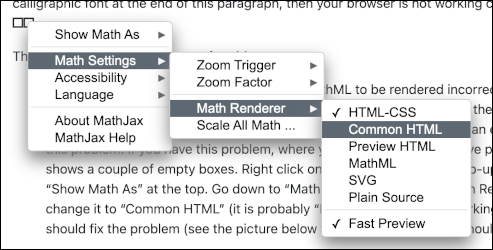

Since this class is math-heavy, certain material is presented on web pages (both directly and inside Canvas) using MathML. Most correctly-configured browsers show this without any difficulty, but some configurations cause problems. If you don’t see “OK” written in a calligraphic font at the end of this paragraph, then your browser is not working correctly: \(\mathcal{O}\mathcal{K}\)
There are two common causes of problems:
Some browsers have a setting that causes MathML to be rendered incorrectly. The only time I’ve seen this is with Chrome and Edge running on a Mac, but there might be other systems/browsers that have the same issue. Fortunately, there is an easy fix to this problem: if you have this problem, where you should see “OK” above probably just shows a couple of empty boxes. Right click on that, and you’ll see a pop-up menu with “Show Math As” at the top. Go down to “Math Settings” and then “Math Renderer” and change it to “Common HTML” (it is probably “HTML-CSS” if it’s not working). This should fix the problem (see the picture below to see what the menus should look like).

You have JavaScript disabled. Yes, I know, some people don’t like JavaScript. But these pages will not render correctly with JavaScript disabled. If you are really worried about this you can create a separate Chrome profile with JavaScript enabled, to keep it “away from” your normal browsing profile, or you can have a separate browser for this, but one way or the other you need JavaScript enabled in the browser that you use to view these pages.